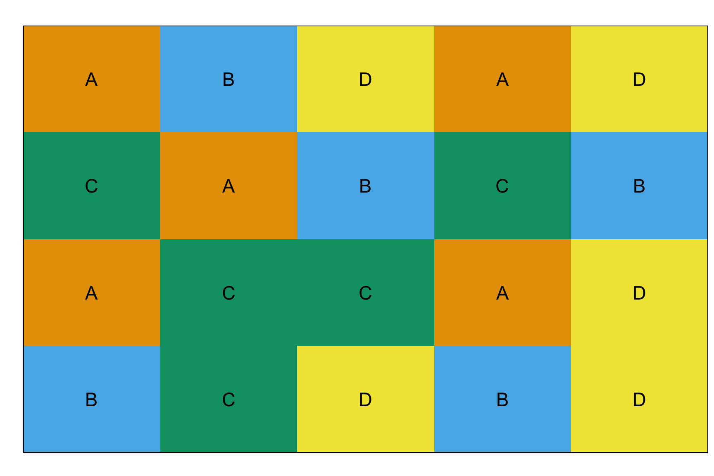
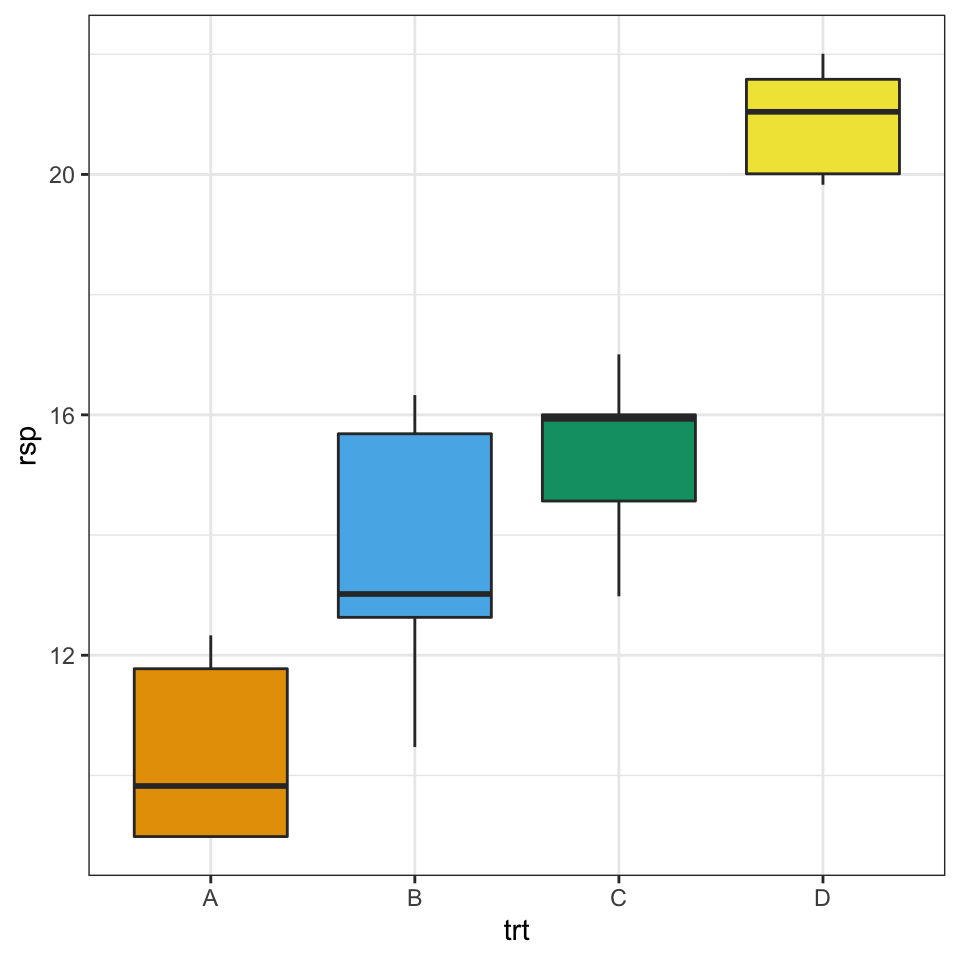
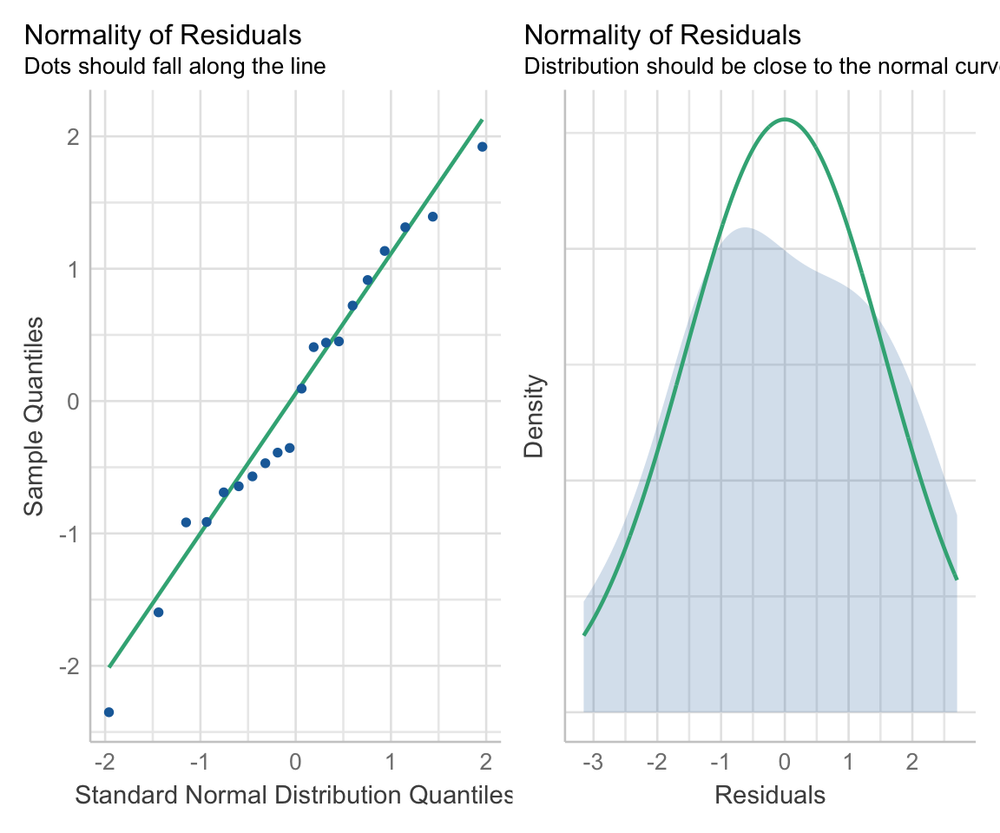
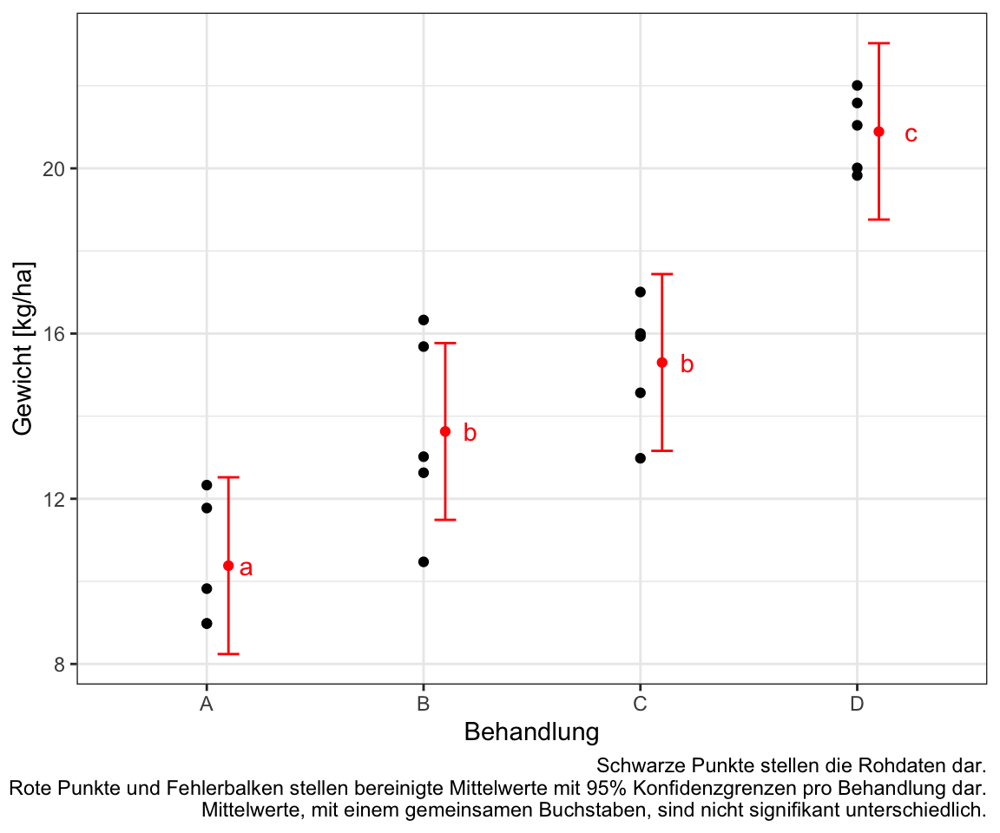
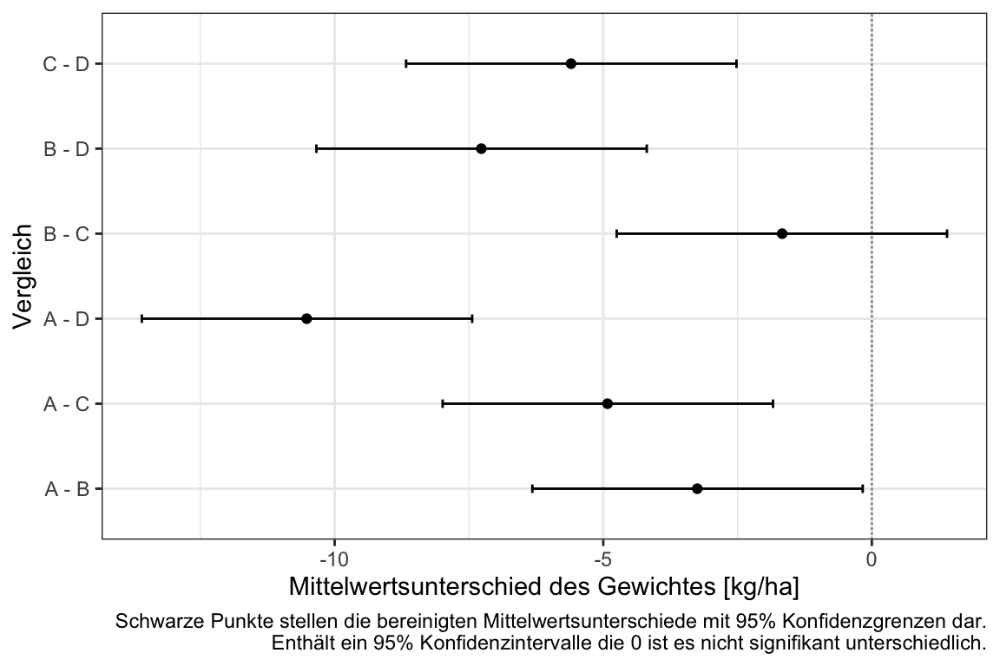
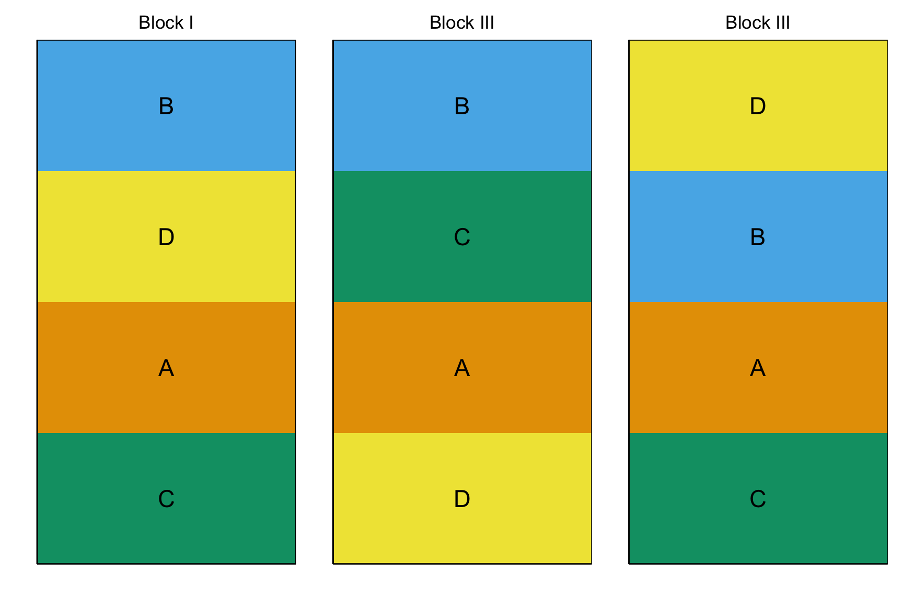
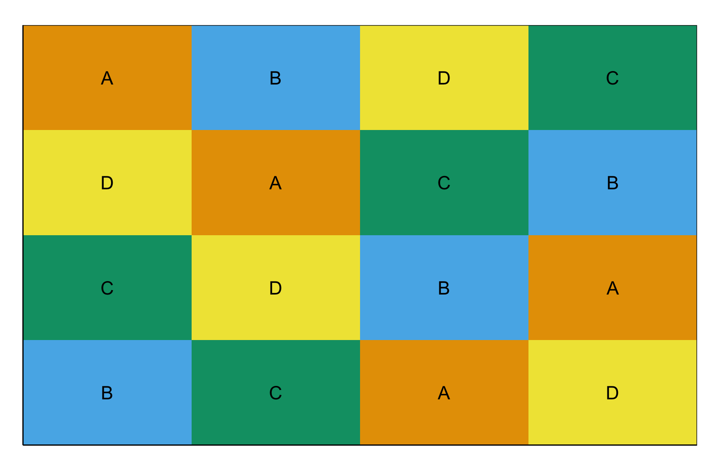
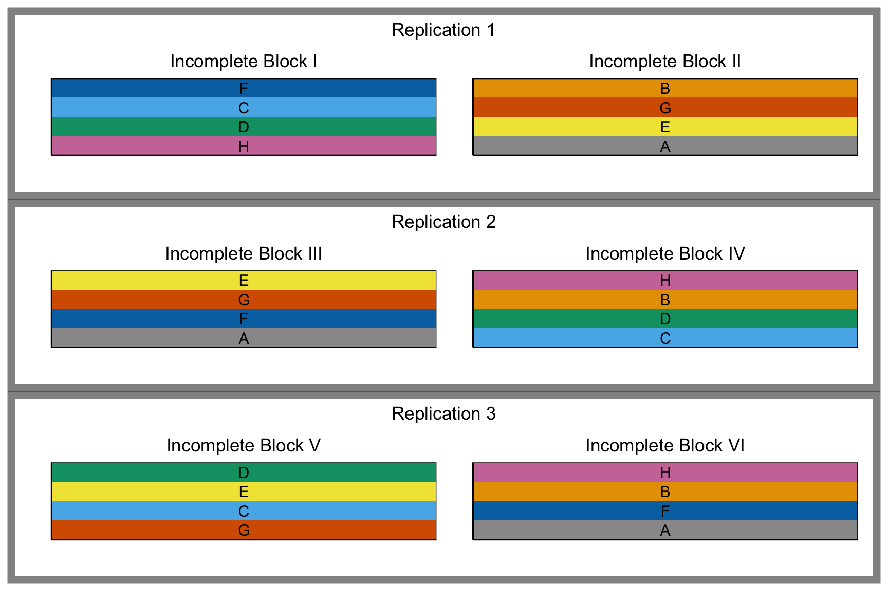
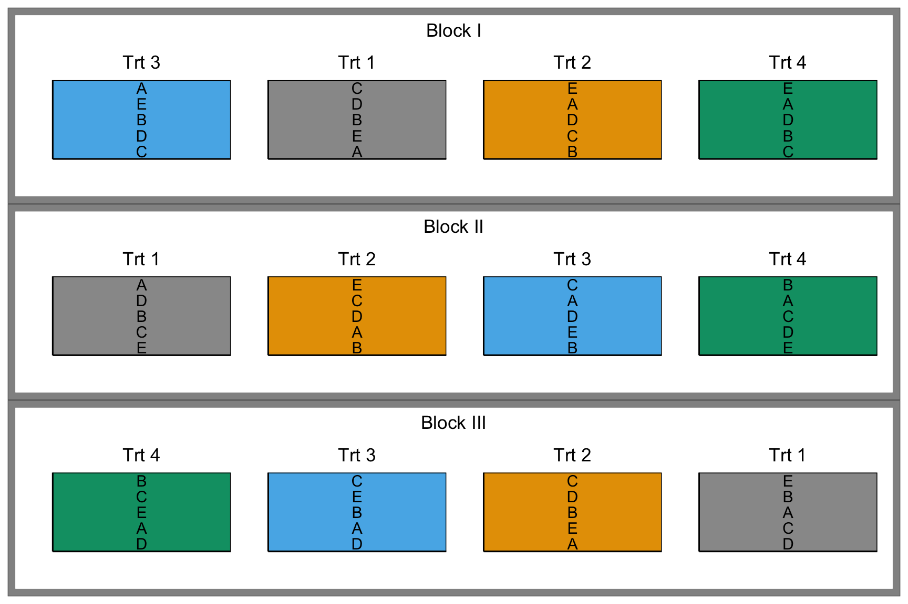

39 Grundlagen der Versuchsplanung
Version vom September 16, 2022 um 13:59:22

Experimental Designs with agricolae
39.1 Genutzte R Pakete für das Kapitel
Wir wollen folgende R Pakete in diesem Kapitel nutzen.
pacman::p_load(tidyverse, magrittr, conflicted, broom,
see, emmeans, multcomp, scales, performance,
effectsize, parameters)
conflict_prefer("select", "dplyr")
conflict_prefer("filter", "dplyr")
conflict_prefer("mutate", "dplyr")
cbbPalette <- c("#999999", "#E69F00", "#56B4E9", "#009E73",
"#F0E442", "#0072B2", "#D55E00", "#CC79A7")Am Ende des Kapitels findest du nochmal den gesamten R Code in einem Rutsch zum selber durchführen oder aber kopieren.
39.2 Complete randomized design (CRD)
39.2.1 Visualisierung

39.2.2 Daten
set.seed(20220916)
crd_tbl <- tibble(A = rnorm(n = 5, mean = 10, sd = 2),
B = rnorm(n = 5, mean = 12, sd = 2),
C = rnorm(n = 5, mean = 16, sd = 2),
D = rnorm(n = 5, mean = 20, sd = 2)) %>%
gather(key = trt, value = rsp) %>%
mutate(trt = as_factor(trt))
crd_tbl# A tibble: 20 × 2
trt rsp
<fct> <dbl>
1 A 12.3
2 A 8.98
3 A 11.8
4 A 9.82
5 A 8.98
6 B 12.6
7 B 13.0
8 B 10.5
9 B 16.3
10 B 15.7
11 C 14.6
12 C 16.0
13 C 17.0
14 C 15.9
15 C 13.0
16 D 21.6
17 D 20.0
18 D 19.8
19 D 22.0
20 D 21.0 ggplot(crd_tbl, aes(trt, rsp, fill = trt)) +
theme_bw() +
geom_boxplot() +
theme(legend.position = "none") +
scale_fill_okabeito() 
39.2.3 Modellierung
fit_crd <- lm(rsp ~ trt, crd_tbl)
fit_crd %>% model_parameters()Parameter | Coefficient | SE | 95% CI | t(16) | p
-----------------------------------------------------------------
(Intercept) | 10.38 | 0.76 | [8.77, 11.99] | 13.66 | < .001
trt [B] | 3.25 | 1.07 | [0.97, 5.53] | 3.02 | 0.008
trt [C] | 4.92 | 1.07 | [2.64, 7.20] | 4.58 | < .001
trt [D] | 10.52 | 1.07 | [8.24, 12.79] | 9.78 | < .001
Uncertainty intervals (equal-tailed) and p-values (two-tailed) computed
using a Wald t-distribution approximation.fit_crd %>% check_homogeneity()OK: There is not clear evidence for different variances across groups (Bartlett Test, p = 0.415).fit_crd %>% check_normality()OK: residuals appear as normally distributed (p = 0.821).check_model(fit_crd, check = c("qq", "normality"))
39.2.4 Varianzanalyse und Mittelwertsvergleich
res_anova <- fit_crd %>%
anova()
res_anova %>% model_parameters()Parameter | Sum_Squares | df | Mean_Square | F | p
-----------------------------------------------------------
trt | 290.34 | 3 | 96.78 | 33.51 | < .001
Residuals | 46.20 | 16 | 2.89 | |
Anova Table (Type 1 tests)res_anova %>% eta_squaredFor one-way between subjects designs, partial eta squared is equivalent to eta squared.
Returning eta squared.# Effect Size for ANOVA
Parameter | Eta2 | 95% CI
-------------------------------
trt | 0.86 | [0.72, 1.00]
- One-sided CIs: upper bound fixed at [1.00].res_crd <- fit_crd %>%
emmeans(~ trt) res_crd_cld <- res_crd %>%
cld(adjust = "sidak", Letters = letters) %>%
tidy() %>%
select(trt, estimate, conf.low, conf.high, .group) %>%
mutate(across(where(is.numeric), round, 2))
res_crd_cld # A tibble: 4 × 5
trt estimate conf.low conf.high .group
<chr> <dbl> <dbl> <dbl> <chr>
1 A 10.4 8.25 12.5 " a "
2 B 13.6 11.5 15.8 " b "
3 C 15.3 13.2 17.4 " b "
4 D 20.9 18.8 23.0 " c"ggplot() +
theme_bw() +
geom_point(data = crd_tbl, aes(x = trt, y = rsp, fill = trt)) +
geom_text(data = res_crd_cld,
aes(x = trt , y = estimate, label = .group),
position = position_nudge(x = 0.2), color = "red") +
geom_errorbar(data = res_crd_cld,
aes(ymin = conf.low, ymax = conf.high, x = trt),
color = "red", width = 0.1,
position = position_nudge(x = 0.1)) +
geom_point(data = res_crd_cld,
aes(x = trt , y = estimate),
position = position_nudge(x = 0.1), color = "red") +
theme(legend.position = "none") +
labs(x = "Behandlung", y = "Gewicht [kg/ha]",
caption = "Schwarze Punkte stellen Rohdaten dar.
Rote Punkte und Fehlerbalken stellen bereinigte Mittelwerte mit 95% Konfidenzgrenzen pro Behandlung dar.
Mittelwerte, mit einem gemeinsamen Buchstaben, sind nicht signifikant unterschiedlich.")
res_crd_tbl <- res_crd %>%
contrast(method = "pairwise") %>%
tidy(conf.int = TRUE) %>%
mutate(p.value = pvalue(adj.p.value),
across(where(is.numeric), round, 2)) %>%
select(contrast, estimate, p.value,
conf.low, conf.high)
res_crd_tbl# A tibble: 6 × 5
contrast estimate p.value conf.low conf.high
<chr> <dbl> <chr> <dbl> <dbl>
1 A - B -3.25 0.037 -6.32 -0.17
2 A - C -4.92 0.002 -7.99 -1.84
3 A - D -10.5 <0.001 -13.6 -7.44
4 B - C -1.67 0.431 -4.75 1.4
5 B - D -7.27 <0.001 -10.3 -4.19
6 C - D -5.6 <0.001 -8.67 -2.52ggplot(res_crd_tbl, aes(contrast, y=estimate, ymin=conf.low, ymax=conf.high)) +
geom_hline(yintercept=0, linetype="11", colour="grey60") +
geom_errorbar(width=0.1) +
geom_point() +
coord_flip() +
theme_bw() +
labs(x = "Vergleich", y = "Mittelwertsunterschied des Gewichtes [kg/ha]",
caption = "Schwarze Punkte stellen die bereinigten Mittelwertsunterschiede mit 95% Konfidenzgrenzen dar.
Enthält ein 95% Konfidenzintervalle die 0 ist es nicht signifikant unterschiedlich.")
39.3 Randomized complete block design (RCBD)

39.4 Latin square design (LSD)

39.5 Alpha design

39.6 Split plot design

data_tbl <- expand_grid(trt = 1:4, block = 1:4, rep = 1:5) %>%
mutate(rsp = 20 + 2.5 * trt + 1.5 * block + rnorm(n(), 0, 1),
trt = factor(trt, labels = c("ctrl", "A", "B", "C")),
block = factor(block, labels = as.roman(1:4)),
rep = as_factor(rep))
lm(rsp ~ trt + block, data_tbl) %>%
emmeans(~ trt) %>%
contrast(method = "pairwise") contrast estimate SE df t.ratio p.value
ctrl - A -1.98 0.322 73 -6.138 <.0001
ctrl - B -4.47 0.322 73 -13.881 <.0001
ctrl - C -6.96 0.322 73 -21.610 <.0001
A - B -2.49 0.322 73 -7.743 <.0001
A - C -4.98 0.322 73 -15.472 <.0001
B - C -2.49 0.322 73 -7.729 <.0001
Results are averaged over the levels of: block
P value adjustment: tukey method for comparing a family of 4 estimates lm(rsp ~ trt, data_tbl) %>%
emmeans(~ trt) %>%
contrast(method = "pairwise") contrast estimate SE df t.ratio p.value
ctrl - A -1.98 0.624 76 -3.169 0.0116
ctrl - B -4.47 0.624 76 -7.167 <.0001
ctrl - C -6.96 0.624 76 -11.157 <.0001
A - B -2.49 0.624 76 -3.998 0.0008
A - C -4.98 0.624 76 -7.988 <.0001
B - C -2.49 0.624 76 -3.990 0.0009
P value adjustment: tukey method for comparing a family of 4 estimates lm(rsp ~ trt + block, data_tbl) %>%
glht(linfct = mcp(trt = "Tukey")) %>%
tidy# A tibble: 6 × 7
term contrast null.value estimate std.error statistic adj.p.value
<chr> <chr> <dbl> <dbl> <dbl> <dbl> <dbl>
1 trt A - ctrl 0 1.98 0.322 6.14 2.08e- 7
2 trt B - ctrl 0 4.47 0.322 13.9 0
3 trt C - ctrl 0 6.96 0.322 21.6 0
4 trt B - A 0 2.49 0.322 7.74 1.62e-10
5 trt C - A 0 4.98 0.322 15.5 0
6 trt C - B 0 2.49 0.322 7.73 7.13e-11